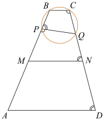
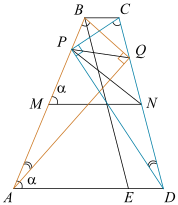

а) По условию, четырёхугольник $PBCQ$ вписанный. Значит, $\angle BCQ+\angle BPQ=180^\circ$. Отрезок $MN$ — средняя линия трапеции $ABCD$, она параллельна основаниям $BC$, а тогда $\angle BCQ+\angle QNM=180^\circ$ как односторонние углы при параллельных прямых. Следовательно, $\angle BPQ=\angle QNM$. Для смежных углов справедливо равенство $\angle BPQ+\angle MPQ=180^\circ$, а значит, $\angle QNM+\angle MPQ=180^\circ$. В четырёхугольнике $MPQN$ сумма противоположных углов равна $180^\circ$, поэтому вокруг него можно описать окружность. Таким образом, точки $M$, $N$, $P$ и $Q$ лежат на одной окружности, что и требовалось доказать.

б) Пусть $\angle PMN=\angle PAD=\alpha$ (эти углы равны как соответственные углы при параллельных прямых). В пункте а) было показано, что $\angle QNM+\angle MPQ=180^\circ$, это означает, что $\angle QDA+\angle MPQ=180^\circ$ и, следовательно, точки $A$, $D$, $P$ и $Q$ тоже лежат на одной окружности.
Вписанные углы, опирающиеся на одну и ту же дугу окружности, равны. Следовательно, $\angle PBQ=\angle PCQ$ и $\angle PAQ=\angle PDQ$. Значит, треугольники $DPC$ и $AQB$ подобны по двум углам. Следовательно, $\angle DPC=\angle AQB=90^\circ$, поскольку по условию $AQ$ и $BQ$ перпендикулярны.
В прямоугольном треугольнике $CPD$ точка $N$ — середина гипотенузы. Следовательно,
$PN=CN=ND=\dfrac{CD}{2}=\dfrac{17}{2}=8{,}5.$
С другой стороны, средняя линия трапеции
$MN=\dfrac{AD+BC}{2}=\dfrac{9+1}{2}=5.$
Покажем, что угол $\alpha$ прямой. Для этого на отрезке $AD$ отметим точку $E$ так, что $ED=BC=1$, тогда $AE=8$, $BE=17$. Заметим, что $BE^2=AE^2+AB^2$, следовательно, по теореме, обратной теореме Пифагора, треугольник $ABE$ прямоугольный, с прямым углом $BAE$. Значит, треугольник $PNM$ также прямоугольный.
Применяя теорему Пифагора, получаем:
$$ PM=\sqrt{PN^2-MN^2}=\sqrt{\frac{289}{4}-25}=\frac{\sqrt{189}}{2}=\frac{3\sqrt{21}}{2}. $$
Ответ: $\dfrac{3\sqrt{21}}{2}$.